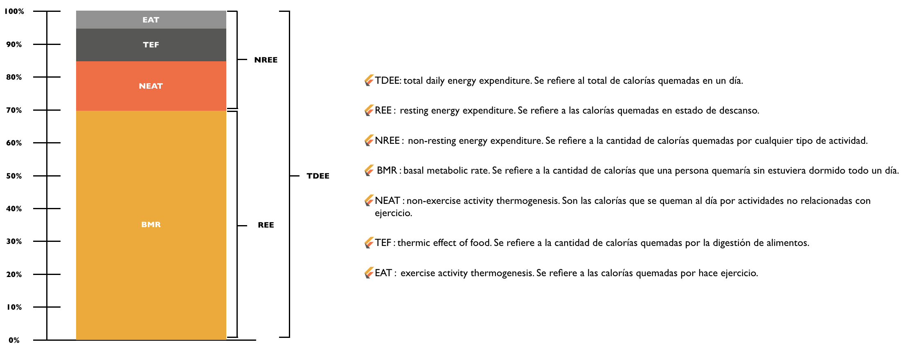

El otro componente de una vida saludable: NEAT
Como lo hemos mencionado muchas veces, las dos cosas clave a la hora de hablar de bajar o subir de peso de manera saludable y balanceada, son la alimentación y el ejercicio. Además de estos dos factores, hay muchas otras cosas que se deben tener en cuenta como el nivel de sueño o el estrés, que también son factores que nos afectan cuando estamos tratando de cumplir nuestros objetivos.
Sin embargo, hay un factor adicional del que muchos no hablan y es algo que puede marca una gran diferencia en el camino y es el NEAT o "Non exercise activity thermogenesis" como se le conoce en inglés. En esencia, NEAT son todas las calorías que quemamos que no provienen del ejercicio o entrenamiento que estamos realizando, son todas aquellas que nuestro cuerpo quema naturalmente por realizar actividades del día a día y que en muchos casos pueden contar por un 10% o 15% de las calorías totales quemadas en un día, lo cual puede ser más de lo que llegamos a quemar con una hora de gimnasio. En este punto debo hacer un alto para aclarar algo, esto no significa que uno deba abandonar el ejercicio y concentrarse únicamente en aumentar el NEAT, ¡no! El ejercicio brinda al cuerpo muchas más cosas que solo la quema de calorías que no se pueden obtener por medio del NEAT como la flexibilidad, la fuerza y la movilidad.
Si bien estos porcentajes son aproximados, podemos ver que existen muchas razones por las cuales nuestro cuerpo quema calorías. La gran mayoría de estas viene del BMR, que son, para ponerlo en términos muy simples, las calorías que se queman por existir. Sin embargo, la segunda razón más grande para la quema de calorías es el NEAT, es decir, todas esas cosas que hacemos diariamente que no son ejercicio o entrenamiento, por ejemplo: caminar, subir escaleras, colgar un cuadro, hacer jardinería, cocinar o hasta estar parado mucho tiempo, en fin, casi que cualquier cosa que hagamos puede ser lo que nos haga la diferencia entre estar en un deficit calórico o no estarlo. Hagamos un calculo sencillo e hipotético para entender mejor el efecto del NEAT:
Una persona que su TDEE sea 2000, quiere decir que las calorías que esa persona quema solamente por estar viva son más o menos 1400 (el 70% de 2000). Si esta persona solo quemara esto diariamente y nada más, y quiero aclarar que esto es un ejemplo hipotético pues durante el día todos nos movemos de una u otra forma, para llegar a estar en un deficit calórico y poder perder peso, debería comer más o menos unas 1100 calorías al día, un número muy bajito para cualquier persona. Para tener un punto de referencia, un almuerzo en el que uno coma una pechuga de pollo, ensalada y arroz puede tener entre 450 y 600 calorías. Lo que quiere decir que esta persona con un almuerzo normal estaría comiendo casi la mitad de su total de calorías del día para estar en deficit calórico (1100 cals - 600 cals = 500 cals).
Ahora pensemos que esta persona realiza algún tipo de movimiento en el día (NEAT), camina a la oficina, no sube por ascensor sino por las escaleras y cuando llega a su casa en la tarde sale con su perro a caminar. Esto aumentaría las calorías que quema esta persona de 1400 en el anterior ejemplo a 1700 calorías, lo cual empieza a verse como un número mucho más normal. Si a esto le sumamos el TEF, es decir, lo que el cuerpo quema por hacer digestión, estaríamos hablando de 200 calorías más, lo que nos daría un total de 1900 calorías al día sin hacer ejercicio. Acá un deficit calórico significativo estaría alrededor de las 1500 calorías, lo cual permite espacio para muchas cosas más.
Ahora que entendimos esto, ¿cuál es el aprendizaje? ¡Tenemos que movernos más! Hay muchas cosas que se pueden hacer:
- Al subirte a un bus, en vez de sentarte, ve parado durante el recorrido.
- Camina al trabajo y a tu casa.
- Sube las escaleras en vez de tomar el ascensor.
- En el trabajo trata de tomar pausas activas para caminar un poco.
- No trabajes todo el día sentado. Busca una barra alta donde puedas estar parado durante un tiempo mientras trabajas.
Aunque esto no es una cura milagrosa, ni va a ser lo que en definitiva haga que una persona pierda peso o es reemplazo para el ejercicio como lo decía al comienzo, es algo que indiscutiblemente va a ayudar a largo plazo.
Blog